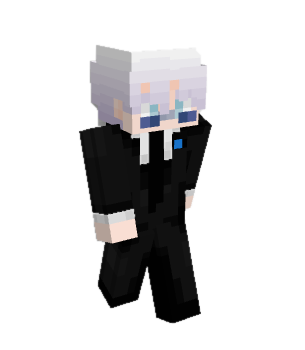

PREVIOUS ROLE
Central Tierlist
Helper · Resigned
Helped players with questions and supported a friendly community.MINECRAFT STAFF PORTFOLIO
Good communities don't happen by accident.
They’re built by people who care.

✦ PLAYER FIRSTMODERATOR ●01 — INTRODUCTION
The person behind the role.
I'm a Minecraft staff member who enjoys helping players, supporting staff teams, and making communities a better place. Every server has taught me something new, and I bring that experience into every role I take on.
I believe good staff work is about staying fair, communicating clearly, and making sure players feel heard. I try to approach every situation calmly, listen before deciding, and keep learning from the team around me.
Respect the players.
Support the team.
Keep improving.
02 — STAFF JOURNEY
Five servers. Different roles. One goal: a better community.
Helper · Resigned
Helped players with questions and supported a friendly community.Helper · Resigned
Assisted the community and learned the importance of clear communication.Moderator · Resigned
Supported moderation and helped keep the server welcoming and organised.Moderator · Resigned
Previously helped with events, supported players, and encouraged fair play.Helper · Current
Helping players, answering questions, and supporting a friendly server community.03 — WHAT I VALUE
Players should feel welcome, respected, and comfortable asking for help. A positive community starts with how people are treated.
Being staff means making thoughtful decisions and treating people fairly, even when a situation is difficult.
Strong teams communicate, learn from each other, and solve problems together. I value clear updates, mutual respect, and helping teammates when things get busy.
04 — LET'S CONNECT
For staff-related questions, collaborations, or a friendly chat, reach out to me on Discord.